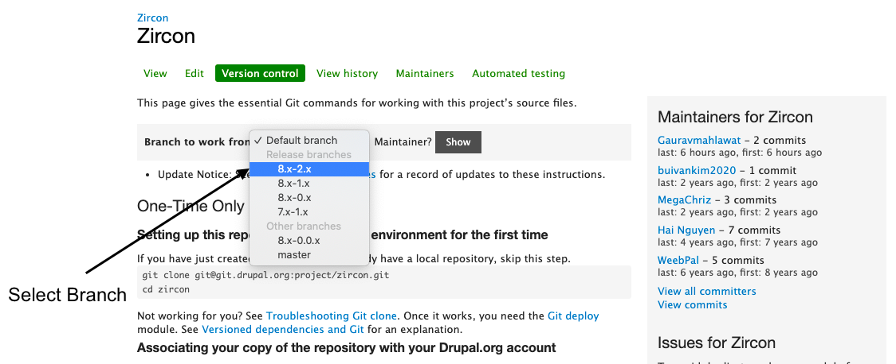

The Drupal Community consists of all the members using Drupal and coming together to form a group and voluntarily give their time to contribute towards bettering the community.
There are multiple ways to contribute to the Drupal community, and you don't need to have a developer background to give something to the community.
Note: https://www.youtube.com/watch?v=INpedSOpdqw&feature=youtu.be
Following can be the different states of an issue:
One can pick the issues from either of the two states to start with.
Other States:
With the Merge Request workflow in Drupal Gitlab, It is now easier than ever to contribute to Drupal via code.
Step 1: Find a Drupal.org issue OR Create one.
Step 2: Create a Fork.
Step 3: Make changes to the fork.
Step 4: Commit & Push changes to the issue fork branch.
Once the MR is submitted, the same is reflected in the Drupal.org issue.
Mark the issue as Needs Review and let the reviewers and maintainers take this issue forward from here.
Add organization to profile and add an attribute ( i.e Your name at organization OpenSense Labs ).
Go to any theme/module > Version control > select the branch to work from > clone in theme or module folder.
Ex: git clone --branch '8.x-4.x' https://git.drupalcode.org/project/bootstrap.git
You can find issues in contributed themes, contributed modules, and Drupal core.
You can pick open issues to provide patches or comment as per requirement. Or you can create a new issue, Make sure you go through all the issues, it should not be duplicated and a valid issue.
When you make changes in files to fix any issue.
1. Add that file by git add
2. Create patch from added files:
git diff --cached (files added by git add) > [description]-[issue-number]-[comment-number].patch
Eg:git diff --cached style.css > overflow-issue-fixed-313233-2.patch
Style.css: is the modified file, overflow-issue-fixed: description of issue, 313233: Issue no. 2: comment no, .patch to create .patch file.
https://www.drupal.org/community/contributor-guide/contribution-areas/modules-themes-distributions
3. Steps to Create Interdiff:
git apply -v downloadedFile.patch git apply -v the previous patch (against which we need interdiff.) git add (all changes of the previous patch) git diff > interdiff_4-5.txtgit add (your changes)
Managing a drupal.org theme, module, or distribution project: https://www.drupal.org/docs/develop/managing-a-drupalorg-theme-module-or-distribution-project
Go to drupal.org/project/add and click the link for the type of project you want to create. Fill out the form. By default, your project will be a sandbox project.
See documentation: https://www.drupal.org/docs/develop/managing-a-drupalorg-theme-module-or-distribution-project/creating-a-new-project
The following are examples of types of contributions that should be recognized:
Some popular channels are:
Many modules and themes have their own channels - for example:
Written By: Gaurav Mahlawat